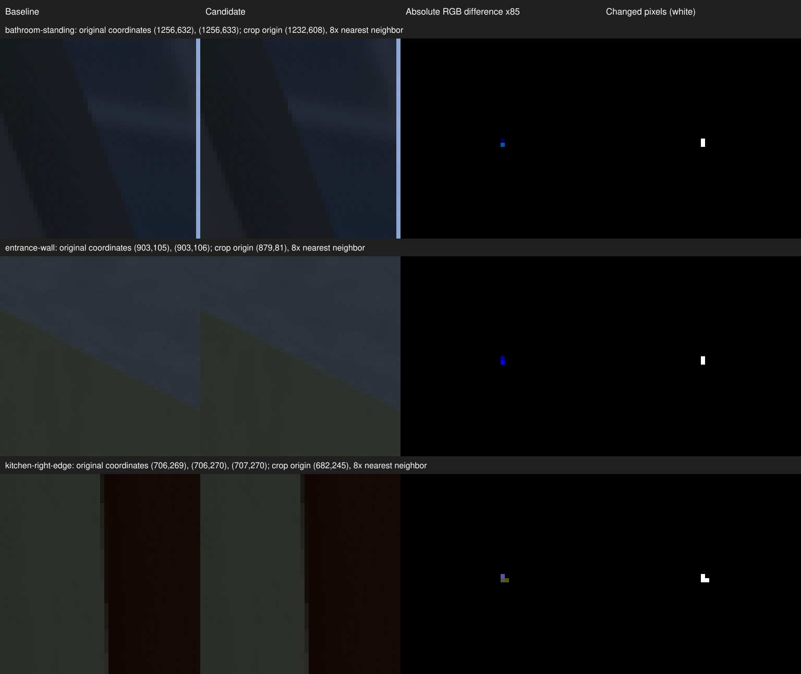

CasinoGame · performance review · Bevy 0.19.1
Lighting performance investigation
Final throughput, trace, and render-target comparisons are complete. Across eight successful runs, the candidate increased canvas acquisition throughput by 26.6–77.7% at the same physical resolutions. No visual quality settings were reduced. Ten of thirteen full render-target images match exactly; three isolated pixels differ across the other three views, with a maximum channel difference of 6/255. Their cause is not established. Acquisition rates do not establish displayed FPS.
The goal is to improve the same apartment and city view while retaining their lighting, shadows, textures, geometry, fog, and render resolution. Measurements below separate the rate of game canvas acquisitions from Chromium's page presentation outcomes.
Final baseline and candidate comparison
Each physical canvas size used fifteen-second samples in baseline, candidate, candidate, baseline order: two samples per configuration and view, sixteen view samples total. All eight runs completed gameplay smoke checks with zero browser errors, no duplicate texture acquisitions, and visible/focused sampling. Baseline and candidate loaded the same asset and used the same cameras, browser, GPU, and physical canvas size. Trace samples appear separately.
Acquisition throughput is total acquisitions divided by the full sample wall time. It includes stalls. A frame acquisition does not prove that Chromium displayed fresh game content. Per-sample P95 intervals and sample boundary gaps accompany the final rates.
Per-sample P95 acquisition intervals
These are separate sample percentiles. No average percentile is presented as a pooled result.
What the candidate changes
- An optimized web build.
web-perf inherits Cargo's release profile, with optimization level 3, thin LTO, one code generation unit, and incremental compilation disabled. This improves the CPU/WASM build configuration; it does not directly optimize GPU WGSL. The older web profile inherits development settings and compiles the application and dependencies at optimization level 1.
- Explicit light clustering. The camera retains 4096 total clusters and 24 depth slices, sets the first slice depth to 1 m, and extends the cluster far depth to the unchanged 2000 m projection far plane. This changes which light candidates a visible pixel considers. It does not reduce light ranges or view distance.
- Exact-zero spotlight guards. The shader checks the existing distance and cone attenuation before shadow/lighting work, and skips the direct lighting calculation when its shadow multiplier is exactly zero. Positive contributions retain Bevy's original calculation. The patch checks the pinned shader structure and retains the original shader if it does not match.
- CPU light-list assignment on WASM. At Startup, the candidate selects Bevy's CPU clustering path through
GlobalClusterSettings.gpu_clustering = None. This changes where light lists are constructed while preserving other device capabilities and limits. It is included in the final candidate measured above. Its two-view preview matched exactly; the final screenshot differences are disclosed below. The overall candidate gains do not isolate this one change.
Bevy's cluster configuration and CPU-path setting, renderer clustering setup, and spotlight loop document the corresponding engine behavior. Cargo documents profile inheritance and compiler settings.
Why small textures and a simple scene can still run slowly
The reduced runtime scene has 32,649 instantiated triangles and 78 shared images; its imported geometry and image sizes are recorded in the asset comparison. Those counts do not cap the work performed for every visible pixel. A 1600 × 900 canvas has 1.44 million pixels; 3073 × 1920 has 5.90 million — about 4.10 times as many.
Six overlapping spotlights and a directional light can require shadow lookups and physically based material calculations over those pixels. Shadow maps are generated render textures, so a 256 × 256 material texture does not make a shadow lookup equally small. The depth prepass, main lighting pass, and shadow-map rendering also have different costs. Light clustering helps by limiting the lights considered for each region; exact-zero guards avoid work whose final contribution would be zero.
The current fog is FogFalloff::ExponentialSquared { density: 0.045 }: distance fog evaluated by Bevy's fog shader. It is not volumetric ray marching. The fog setting is preserved, and no fog-off gain is claimed in this report. See the pinned lighting attenuation functions, shadow lookups, and per-pixel cluster lookup for the work involved.
Screening matrix: verified controls, identical captures
One Chromium session screened seven configurations at 1600 × 900. Every cluster setting was confirmed by its applied log, and shader toggle logs confirmed the expected stock/fast state. Each setting settled for six seconds, each camera for three seconds, and each view sampled for fifteen seconds. This fixed-order matrix helps choose the candidate; it is not the final repeat-based gain comparison.
All seven apartment PNGs are byte-identical to one another, and all seven courtyard PNGs are byte-identical to one another: fourteen captures, two distinct images. That verifies the captured matrix views only. The final CPU-path candidate is checked separately below at the full render-target dimensions. The matrix completed pointer lock, walk, jump, turn, escape, and restart checks with zero browser errors. Raw matrix samples, controls, and logs.
Compare stock/default and fast/combined matrix captures
 Stock shader, default clusters
Stock shader, default clusters Exact-zero guards, near and far cluster settings
Exact-zero guards, near and far cluster settings Stock/default courtyard
Stock/default courtyard Fast/combined courtyard — identical captured pixels
Fast/combined courtyard — identical captured pixelsWhat the exploratory traces establish
Two optimized-build runs with default clusters were traced at 1600 × 900 on Chromium 154.0.8037.97, hardware WebGPU, Intel gen-12lp, with isFallbackAdapter=false. Despite its directory name, trace-far also used default clusters: its early control changed zero cameras. These traces describe baseline variability and stalls, not a far-cluster improvement.
The first courtyard trace contained 11.88 seconds of wall time inside WebGPU decoder flushes longer than 50 ms, with only 71 ms of thread CPU time across those flushes. Its 995 ms acquisition gap overlapped a 678 ms GPU-process flush using about 6.6 ms of CPU time. The game main thread's RAF callbacks peaked at 21 ms. The recorded samples remained visible and focused, duplicate texture acquisitions were zero, and the recorded BeginFrame decisions contained no explicit throttling.
This points to waiting in Chromium's WebGPU command-processing path. These CPU/driver spans do not measure actual GPU shader execution. They cannot distinguish hardware workload, driver synchronization, fence waits, or compositor interoperability as the final cause. These exploratory spans do not isolate a shader or clustering cause; final combined measurements and matched path-choice traces are recorded separately.
Presentation analysis pairs PipelineReporter begin/end records, filters the game renderer and page layer tree, selects successful outcomes ending between sample markers, and deduplicates display_trace_id. Normal and forked reporters can describe the same display frame. A generic DrawFrame or Display::FrameDisplayed count is not a fresh-game FPS measurement. Even successful page feedback does not identify a unique WebGPU texture reaching the screen.
Sources: DevTools frame filtering, Perfetto surface/display joins, and Chromium presentation feedback. Raw artifacts: first baseline trace samples · second baseline trace samples.
CPU-path preview and completed checks
The CPU-clustering preview measured 32.59 apartment acquisitions/s and 26.86 courtyard acquisitions/s at 1600 × 900. Per-sample P95 intervals were 34.1 ms and 42.5 ms, with maximum gaps of 51.0 ms and 64.1 ms. Both captured images matched the baseline exactly; gameplay smoke checks completed with zero browser errors. These preview samples are excluded from the final alternating-repeat table. CPU-path preview samples.
The baseline wasm-bindgen artifact is 153,101,013 bytes and the optimized candidate is 89,206,695 bytes, a 41.73% reduction. This is a file-size result, not a browser memory or shader-time measurement. Eight Rust tests, four Python tests, and the benchmark metric self-check pass. All eight final throughput runs and both eleven-view visual runs passed browser smoke checks. Full render-target comparisons, supplemental CSS screenshots, and matched path-choice traces are recorded below.
Matched trace: GPU and CPU light-list paths
One fifteen-second courtyard trace per path at 1600 × 900 used the fast spotlight shader and the same combined cluster settings (first slice 1 m, far plane 2000 m). These diagnostic samples compare the selected light-list paths; they are separate from the untraced baseline/candidate results above.
The GPU path encoded three compute passes (Z slicing, local allocation, global allocation) and two render passes (count and populate) on each of its 384 frames: 1920 cluster passes, plus 384 metadata mapAsync requests. The CPU path recorded zero GPU cluster passes and zero such metadata-map requests. This confirms that the intended path switch took effect.
Neither matched trace contained a WebGPU decoder flush longer than 50 ms, and neither recorded explicit BeginFrame throttling. The small traced rate difference does not establish an isolated CPU-clustering speed gain. In particular, the absence of long waits in the matched GPU run prevents attributing all earlier stalls to GPU clustering. The measured overall gains come from the combined candidate, not from adding separate experiment percentages.
Trace analysis data · Readable trace analysis · GPU-path sample and counters · CPU-path sample and counters · GPU-path raw trace (.json.gz) · CPU-path raw trace (.json.gz) · Raw trace SHA256 and compression metadata.
The reproducible trace parser reads plain JSON or gzip. From the repository root: python3 art/review/performance/lighting-optimization/evidence-tools/analyze_chrome_traces.py art/review/performance/lighting-optimization/trace-selected-gpu art/review/performance/lighting-optimization/trace-selected-cpu --output /tmp/trace-selected-analysis.
Final visual and gameplay validation
Ten of thirteen full render-target images match exactly. All eleven apartment review views were compared at 1600 × 900, and apartment and courtyard were also compared at 3073 × 1920. Bathroom standing, entrance wall, and kitchen right edge each differ at one pixel: maximum channel differences are 3, 4, and 6 out of 255 respectively. Both larger images match exactly. Across 27,640,320 compared pixels, three differ. Their cause is not established, so this report does not claim universal pixel identity or a rounding-only explanation.
These PNGs come directly from canvas.toDataURL, and their dimensions match the physical render targets. Captures happen after each timed sample. Visual-only one-second samples are excluded from throughput results. The candidate preserves the lighting, shadows, textures, geometry, fog, and render resolution settings; the measured differences above remain disclosed.
Eleven-view native comparison · Larger native comparison. The expandable pairs below link to the complete PNGs.
apartment — 1600 × 900; 0 changed pixels, max channel 0/255
bathroom jump — 1600 × 900; 0 changed pixels, max channel 0/255
bathroom standing — 1600 × 900; 1 changed pixels, max channel 3/255
bedroom left edge — 1600 × 900; 0 changed pixels, max channel 0/255
bedroom right edge — 1600 × 900; 0 changed pixels, max channel 0/255
bedroom window — 1600 × 900; 0 changed pixels, max channel 0/255
court from window — 1600 × 900; 0 changed pixels, max channel 0/255
east window — 1600 × 900; 0 changed pixels, max channel 0/255
entrance wall — 1600 × 900; 1 changed pixels, max channel 4/255
kitchen left edge — 1600 × 900; 0 changed pixels, max channel 0/255
kitchen right edge — 1600 × 900; 1 changed pixels, max channel 6/255
apartment — 3073 × 1920; 0 changed pixels, max channel 0/255
court from window — 3073 × 1920; 0 changed pixels, max channel 0/255
Supplemental browser screenshots and amplified difference crops
The earlier eleven-view PNGs are 1280 × 720 browser screenshots of a 1600 × 900 canvas. The two larger PNGs are 2458 × 1536 screenshots of a 3073 × 1920 canvas. Ten of these thirteen downscaled images match exactly. Bathroom standing differs at two pixels (max channel 2/255), entrance wall at two (3/255), and kitchen right edge at three (2/255): seven changed screenshot pixels total. These counts are separate from the native-canvas counts above.
Eleven-view screenshot comparison · Larger screenshot comparison · Screenshot pixel coordinates and channel values. The following contact sheet shows 8× enlarged browser-screenshot crops and differences amplified 85×; it is a diagnostic view, not the original appearance. The difference cause is not established.

Supplemental CSS-scaled captures: baseline, candidate, amplified difference.
All four native visual runs completed pointer lock, walk, jump, turn, escape, and restart checks with zero browser errors. Raw runs: native-visual-1600-baseline · native-visual-1600-candidate · native-visual-3073-baseline · native-visual-3073-candidate.
Eight Rust tests, four Python scene-export tests, benchmark self-check/syntax, formatting, and diff checks passed. All eight final throughput runs, both eleven-view browser screenshot runs, and all four native canvas visual runs completed gameplay smoke checks with zero errors. Both configurations requested apartment_windows.glb. Native pixel differences, supplemental screenshots, and matched path-choice traces are disclosed in this report. The final served WASM, JavaScript, and GLB match the tested candidate byte for byte; root page, WASM, asset, and report HTTP checks returned 200.
Excluded experiments
The first 1600-far, 1600-near, 1600-combined, and 1600-far-repeat runs used a query that matched no camera cluster configuration. Their claimed cluster comparisons are excluded. The corrected matrix required an explicit component and confirmation logs. Preview runs and the fixed-order matrix remain screening evidence.
Reproduction and final artifacts
Structured summary and exact sample statistics · Build and check results · Rust test output · Tested source and asset hashes. Build: cargo build --locked --offline --target wasm32-unknown-unknown --profile web-perf --features scene-review. Final sampling order at each size was B, C, C, B; actual canvas dimensions are recorded because desktop scaling can change them.
Raw final browser samples: final-1600-baseline-1 · final-1600-candidate-2 · final-1600-candidate-3 · final-1600-baseline-4 · final-3073-baseline-1 · final-3073-candidate-2 · final-3073-candidate-3 · final-3073-baseline-4